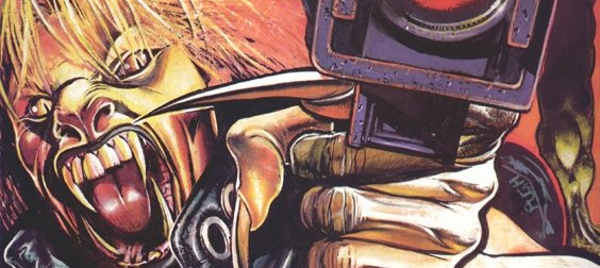

This was an attempt to maintain interest in the Strontium Dog universe despite the death of both of the main characters. Firstly, the conduit for this was Feral Jackson (in the solid but bleak Monsters), soon joined by the Gronk (in a complete reboot of his character). This series tended to drift, encompassing Durham Red and Middenface McNulty, but ultimately not providing a compelling or coherent enough narrative.
Art by Steve Pugh
| Story Title | Parts | Pages | w indicates a wraparound coverCovers | Year(s) | Issues | Writer | Artist | Colourist | Letterer |
|---|---|---|---|---|---|---|---|---|---|
Linked to [Feral Jackson]Monsters | 12 | 60 | 755: Steve Pugh 1 | 1991 | Reprints: M295 (supplement)750-761 | Garth Ennis | Steve Pugh | <-- | Elitta Fell |
From Strontium Dog Effectively mis‑titled, as it's a Feral tale.Dead Man's Hand | 1 | 6 | 0 | 1992 | Reprints: M320 (supplement)2KYB'93 | Garth Ennis | Simon Harrison | [b&w] | Gordon Robson |
Linked to: [Feral Jackson] The GronkReturn of the Gronk | 8 | 48 | 1 | 1993 | Reprints: M305 (supplement)817-824 | Garth Ennis | Nigel Dobbyn | <-- | Ellie de Ville |
| Angel Blood | 1 | 9 | 0 | 1993 | SFS16 | Igor Goldkind | Jon Beeston Colin MacNeilvarious | <-- | Annie Parkhouse |
Linked to The GronkHow the Gronk Got His Heartses | 2 | 12 | 0 | 1993 | Reprints: M305 (supplement)850-851 | Garth Ennis | Nigel Dobbyn | <-- | Gary Gilbert |
Linked to: [Feral Jackson] The GronkThe Darkest Star | 12 | 61 | 860: Nigel Dobbyn 866: Nigel Dobbyn 2 | 1993 | Reprints: M306 (supplement)855-866 | Garth Ennis | Nigel Dobbyn | <-- | Glib: 1‑5, 9‑12 Ellie De Ville: 6‑8 various |
Linked to: [Feral Jackson] The GronkThe Cage | 1 | 6 | Nigel Dobbyn 1 | 1994 | Reprints: M320 (supplement)SDPP | Peter Hogan | Nigel Dobbyn | <-- | Annie Parkhouse |
Linked to: [Feral Jackson] The Gronk Durham RedCrossroads | 3 | 18 | 0 | 1994 | Reprints: M320 (supplement)897-899 | Peter Hogan | Nigel Dobbyn | <-- | Annie Parkhouse |
Linked to: [Feral Jackson] The GronkThe Alphabet Man | 3 | 18 | 937: Nigel Dobbyn 1 | 1995 | 937-939 | Peter Hogan | Nigel Dobbyn | <-- | Annie Parkhouse |
Linked to: [Feral Jackson] The Gronk Durham Red Middenface McNultyHigh Moon | 8 | 48 | 941: Mark Harrison 947: Mark Harrison 2 | 1995 | 940-947 | Peter Hogan | Mark Harrison | <-- | Bunty Mayhew |
Linked to [Feral Jackson]The Mutant Sleeps Tonight | 1 | 6 | 0 | 1995 | 957 | Peter Hogan | Simon Harrison | Junior Tomlin | Annie Parkhouse |
Linked to: The Gronk Middenface McNulty Heavily edited by David Bishop.Hate and War | 7 | 43 | 993: Sean Phillips 996: Henry Flint 2 | 1996 | 993-999 | As Alan Smithee. Peter Hogan | Trevor Hairsine | <-- | Ellie de Ville |
| >> Text Stories << | |||||||||
| Fast Breeder | 1 | 8 | 0 | 1994 | SFS17 | John Smith | Pauline Doyle | [b&w] | n/a |
| Stix & Stone Killers | 1 | 7 | 0 | 1994 | 2KYB'95 | Andrew Price Cartwright Ropervarious | Carlos Ezquerra | [b&w] | n/a |
| >> Features << | |||||||||
Linked to: Strontium Dog [Features] | Indexes Also indexes Strontium Dog.Strontium Dogs: The Series Index | 1 | 1 | 0 | 1994 | SDPP | n/a | n/a | n/a | n/a |
Linked to: Strontium Dog [Features] | Indexes Credit page.Strontium Dogs | 1 | 1 | 0 | 1996 | 993 | editorial | Henry Flint | <-- | n/a |
| >> Posters << | |||||||||
| Strontium Dogs | 1 | 8 | 0 | 1994 | SDPP | n/a | Nigel Dobbyn | <-- | n/a |
From Tharg's Thrill ArchivesPart 14: The Gronk | 1 | 1 | 0 | 1994 | 887 | n/a | Nigel Dobbyn | <-- | n/a |
| year | episodes | pages |
| 1983 | 0 | 0 |
| 1984 | 0 | 0 |
| 1985 | 0 | 0 |
| 1986 | 0 | 0 |
| 1987 | 0 | 0 |
| 1988 | 0 | 0 |
| 1989 | 0 | 0 |
| 1990 | 0 | 0 |
| 1991 | 12 | 60 |
| 1992 | 1 | 6 |
| 1993 | 23 | 130 |
| 1994 | 4 | 24 |
| 1995 | 12 | 72 |
| 1996 | 7 | 43 |
| 1997 | 0 | 0 |
| 1998 | 0 | 0 |
| 1999 | 0 | 0 |
| 2000 | 0 | 0 |
| 2001 | 0 | 0 |
| 2002 | 0 | 0 |
| 2003 | 0 | 0 |
| 2004 | 0 | 0 |
Comic strip data (excludes other content):